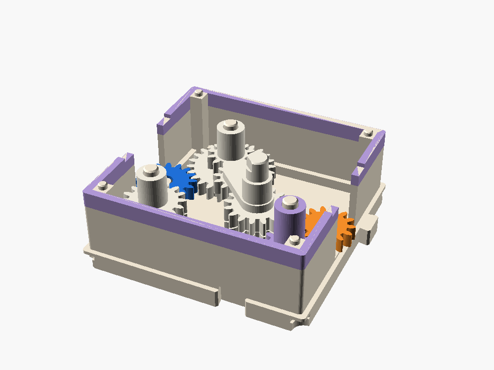
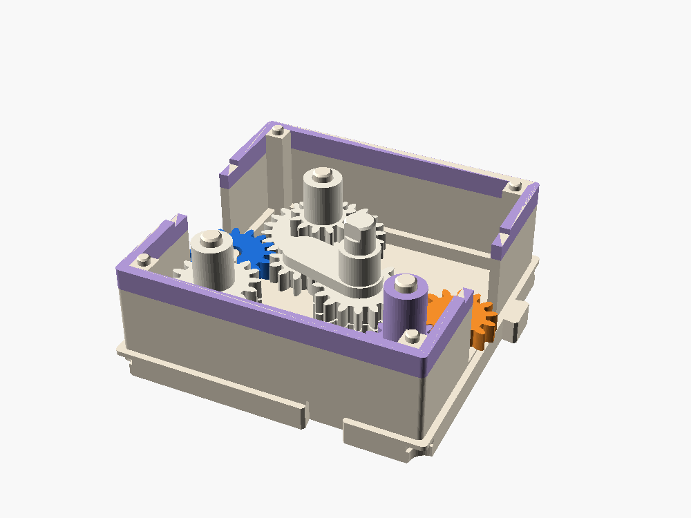
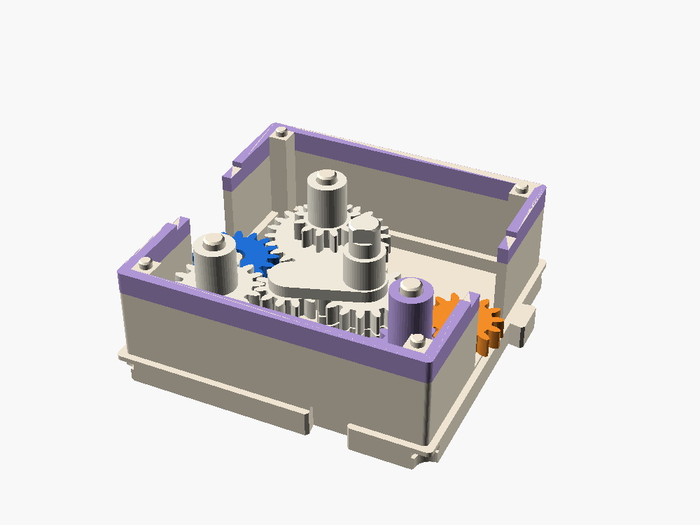
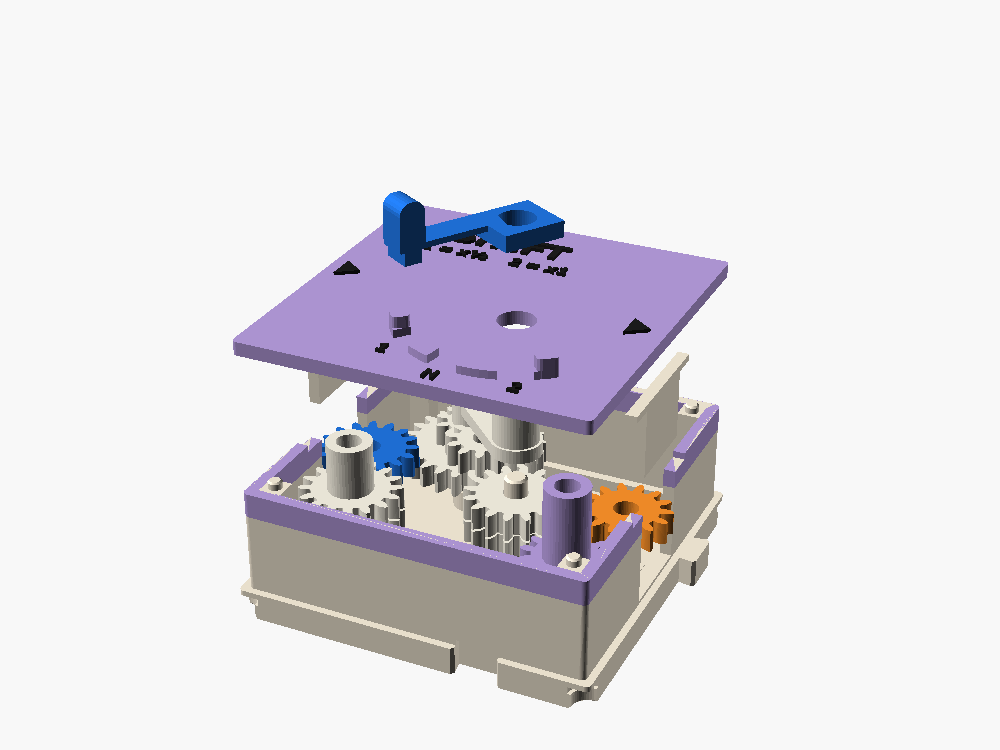

SHIFT 1·N·2
A two-speed gearbox with a stick on the lid. Lift the stick, swing it, let it drop. First gear runs the line at half speed with twice the push, second runs it straight through, and neutral disconnects it. Put a CLUTCH in front and you shift the way a car does.
1 cell · W in (16 teeth) · E out (14) · 1st ×½ · 2nd ×1 · cost 5

Crank, clutch, shift
This is the inside of the box seen from above, drawn from the model's own coordinates. Turn the crank, then try to change gear with the clutch engaged. Then do it the right way: press the clutch first.
In first. Crank speed sets W; E turns at half its pitch-line speed.
W in · E out · arm and idler (layer 2) · faded: layer 1 under it
Constant mesh, one swinging gear
W drives two stacks at once, all the time. P1 has 24 teeth below and 12 above, so its top gear runs at half W's speed. P2 has 16 and 16, so its top gear runs at W's speed. A 12-tooth idler on an arm rolls round the output stack O. In first it meshes P1's top gear, in second P2's, and in neutral it is 2.4 mm clear of both. O drives E through F.



| Gear | Path | Meshes | Ratio | Torque at E |
|---|---|---|---|---|
| 1 | W (16) → P1 (24 · 12) → idler (12) → O (16) → F (14) → E (14) | 5 | ×½ | about ×2 |
| N | W → P1 and P2, turning free; the idler touches neither | – | 0 | 0 |
| 2 | W (16) → P2 (16 · 16) → idler (12) → O (16) → F (14) → E (14) | 5 | ×1 | ×1 |
The idler runs on layer 2 only
Its pin hangs from the arm and ends in a head sunk in a counterbore under the idler. Nothing reaches down to layer 1, so the idler swings over W, P1's big gear and P2's lower gear without touching them.
The arm pivots off center
O sits at (7, −5). That puts both rests on the west side of O, 62.7° apart, with a clear neutral between. Five meshes on either path, an odd count, so E turns forward in both gears.
The gate holds it in gear
Tooth forces drag the arm, into mesh at one rest and out at the other. The stick's peg sits in a notch with straight walls, so either pull meets a wall. The posts at the ends of the gate are the hard stops for 1st and 2nd.
Shift the way a car does
The row is CRANK → CLUTCH → SHIFT → the load. CLUTCH 3 plus SHIFT 5 is 8 of the crank's budget of 20.
- Clutch in. Back CLUTCH's red knob off about one turn. The spring lets go and SHIFT's input stops, even while you keep cranking.
- Shift. Lift the stick, swing it, drop it into the next notch. P1 and P2 aren't being driven, so the idler can nudge them round until the teeth line up.
- Clutch out. Screw the knob back down to where it was, and crank on.
Grinding
Skip step 1 and the idler swings into a gear that is already turning. It lands tooth on tooth or skips. That is the noise a driver hears, and the reason the clutch exists.
Feel the torque
Put something hard to turn after SHIFT, and set CLUTCH light enough that it slips in 2nd. Shift to 1st and the same setting holds: the load needs half the torque at the input.
Double-clutching
With a FLYWHEEL after SHIFT, the output keeps spinning in neutral, and so does the idler. To go into gear smoothly, P1 or P2 must match it. Clutch out in neutral, crank up to speed, clutch in, shift. Synchronizers in a modern car do this for you.
Why there is no reverse
A swinging idler can only reach two gears, one at each end of its swing. Any gear it meshed between the ends would have to stand straight out from O, 26 mm or more away, which is outside the wall of a 64 mm cell. For reverse today, put a REVERSE box behind SHIFT.
A full R · N · 1 · 2 gearbox needs two cells: two swinging idlers, one per shift rail, feeding E, and an H-shaped gate on a 2x1 lid. Across picks the rail, forward and back swings that rail's arm. The H is also the interlock: two gears can never go in at once. That is the next step if this one works.
Parts, colors, assembly
| Part | Color |
|---|---|
| shell, keepers, idler pin | bone |
| lid with the gate | lilac, black lettering |
| port gear W, the stick | blue (input) |
| port gear E | orange (output) |
| P1, P2, O, F, arm, idler | white |
The stick prints on its side so the flexure's lines run along the beam. Lifting the grip 1.5 mm bends it about 1 % at the root; if PLA takes a set, print it in PETG.
- Wipe a PTFE dry film on every pin.
- Fit the port gears W and E.
- Fit P1, P2, F and O on their pins.
- Push the idler pin up through the idler, head into the counterbore, and press it into the arm's plate. Lower the arm onto O's long pin.
- Fit the keepers, then the lid. The arm's shaft comes up beside the gate.
- Press the stick onto the shaft's D-key with its peg in the 1 notch.

Five ideas in one box
- A gearbox trades speed for torque: half the speed, twice the push.
- Constant mesh: the gears always turn; shifting only chooses which pair carries the drive.
- Why a clutch: you can't swing a gear into one turning at a different speed.
- Count the meshes: five, an odd number, so the output turns forward.
- Why a gate: something has to hold the gear in against the forces that push it out.
Fit-checked, not printed
Checked in OpenSCAD 2021: nothing that turns touches anything in 1st and 2nd at input angles 0, 4.5, 9, 45 and 90°, or in neutral; the fixed parts only rest on each other; the model's ratios come out at exactly ½ and 1. Fit-checked on main and in the sandbox; still to do: a print.
- On the first print: mesh and backlash at both rests, the idler riding level on its pin head, which rest the tooth drag pulls out of mesh, and how the flexure feels after a few hundred shifts.